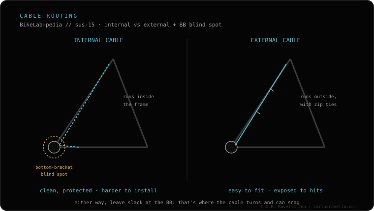

The order that saves you redoing the work: 1) route the cable (internal or external, depending on how your frame is set up); 2) set the saddle height; 3) cut the housing to length; 4) tension the cable at the lever; 5) adjust the lever position. For internal routing, the magnet trick or passing an old cable as a guide first saves you at the blind spot at the bottom bracket.
Fitting a dropper isn't hard; what's scary is the internal cable. With the right order and a trick for the bottom bracket, it goes in on the first try.
The steps, in order
1 · Route the cable — Internal or external depending on your frame. Internal, pass the cable inside the frame to the post; external, it runs outside, secured to the frame. This is the step that decides how hard the whole install is.
2 · Set the saddle height — Put the post at your pedalling height and fix it. Do this before tensioning the cable, because if you change it later you'll have to redo the tension.
3 · Cut the housing to length — Measure and cut the housing so the run to the bar is clean, with no forced kinks or excess that pinches. A badly cut housing adds friction.
4 · Tension the cable at the lever — Fix the cable at the lever with the right tension: neither loose (won't actuate) nor over-tight (keeps the valve half-open).
5 · Adjust the lever position — Rotate and place the lever on the bar where your thumb reaches it without letting go of the grip. Tighten to torque and test the actuation.

The install order and where internal routing gets fiddly.
Key trick: for internal routing, use the magnet trick to drag the cable inside the frame, or pass an old cable as a guide first. The blind spot at the bottom bracket is where almost everyone gets stuck; with a guide, it stops being a problem.
Stuck with the internal cable?
Tell us your frame and where you're stuck and we'll guide you step by step. Message us on WhatsApp
Frequently asked questions
In what order?
Route the cable, set the saddle height, cut the housing to length, tension the cable at the lever and adjust the lever position.
How do I pass the internal cable?
With the magnet trick or by passing an old cable as a guide first through the blind spot at the bottom bracket.
Saddle height or tension first?
Height first; tensioning the cable comes after. The lever adjustment goes last.